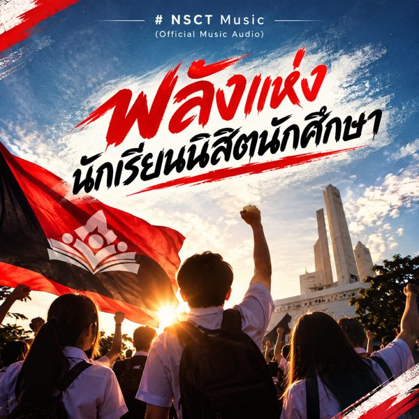

Shorts ประวัติศาสตร์
เหตุการณ์สำคัญย่อยเป็นตอนละไม่ถึงสองนาที ดูจบได้ระหว่างทางกลับบ้าน
เราเล่าประวัติศาสตร์การเมืองและประชาธิปไตยไทยในภาษาของคนรุ่นใหม่ ผ่านคลิปสั้น คลิปเต็ม และเพลง เพื่อให้เรื่องที่เกิดขึ้นจริงไม่ถูกลืม
เหตุการณ์สำคัญย่อยเป็นตอนละไม่ถึงสองนาที ดูจบได้ระหว่างทางกลับบ้าน
รวมทุกตอนไว้ในคลิปเดียว สำหรับคนที่อยากเห็นภาพรวมของเหตุการณ์ตั้งแต่ต้นจนจบ
เพลงที่เราแต่งเพื่อส่งต่อพลังของนักเรียน นิสิต นักศึกษา จากรุ่นสู่รุ่น
ทั้งสองชุดมี Shorts 5 ตอนและคลิปเต็ม เรียงตามลำดับในเพลย์ลิสต์

เพลงประจำของ ศนท. ฟังได้ทั้งแบบ Shorts และเวอร์ชันเต็มพร้อมเนื้อเพลง
ติดตามช่อง ศนท. เพื่อไม่พลาดตอนใหม่ หรือติดต่อเรา ถ้าอยากร่วมทำคอนเทนต์ แนะนำเรื่องที่ควรเล่า หรือชวนไปพูดคุยที่โรงเรียนและมหาวิทยาลัย